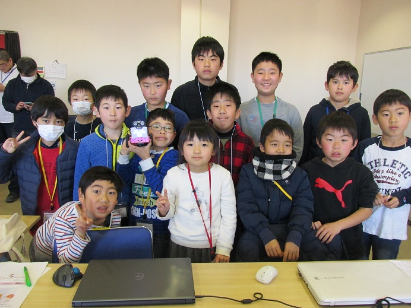

子どものためのプログラミング道場
栃木県 さくら市
栃木県 さくら市
第７回のCoderDojoさくら開催しました！残念ながら私（代表）は体調不良のためお休みいただきました。

今回もたくさんのニンジャ達が参加してくれました！いつもありがとうございます。

今回はAirBlockを目的地に飛ばすプログラムを組んだり・・・・。


mBotに色んな文字や表情を作ってくれたニンジャもいました。

発表タイムが始まりました。ニンジャたちの弟や妹も加わって盛り上がりました！


今回も参加者、メンターその他皆さまのご協力のもと、楽しく開催できたことに感謝いたします。次回は2月10日(土)の午後を予定しています。ぜひ来てくださいね！

第７回のダイジェスト動画を作成しました。こちらもぜひご覧ください。